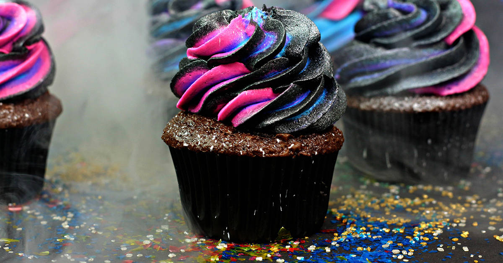

Galactic Nebula Cupcakes:
Description:
Embark on a cosmic culinary journey with these Galactic Nebula Cupcakes! A fusion of flavors from distant galaxies,
these cupcakes are not only visually stunning but also a treat for your taste buds. Perfect for space enthusiasts and
sweet tooth adventurers!

Ingredients:
- Pre-made cupcake mix or your favorite cupcake recipe.
- Galactic Sprinkles (mixed colors).
- Stardust Sugar (edible glitter).
- Interstellar Icing (blueberry-flavored).
- Cosmic Chocolate Chips.
- Edible Silver Stars.
Instructions:
- Bake cupcakes according to the instructions or your preferred recipe.
- Allow the cupcakes to cool completely.
- Generously frost each cupcake with the blueberry-flavored Interstellar Icing.
- Sprinkle Galactic Sprinkles and Stardust Sugar on top of the icing.
- Place Cosmic Chocolate Chips strategically to resemble distant galaxies.
- Gently press Edible Silver Stars into the icing for added celestial flair.
- Let the cupcakes set for 20 minutes before serving.
- Enjoy your journey through the galaxy with these delicious treats!